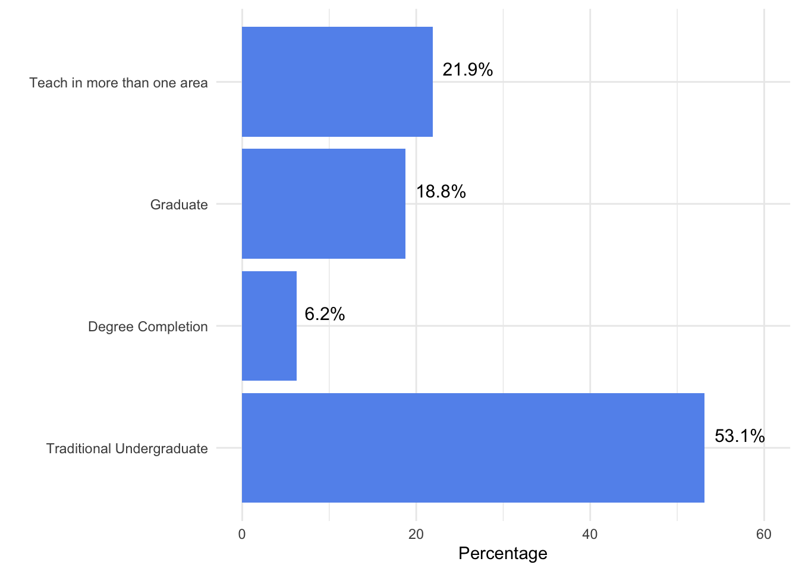
Course Schedule Survey
Faculty Sample (n = 32)
What population of students do you primarily teach?
How satisfied are you with the current academic schedule for TUG at Fresno Pacific?
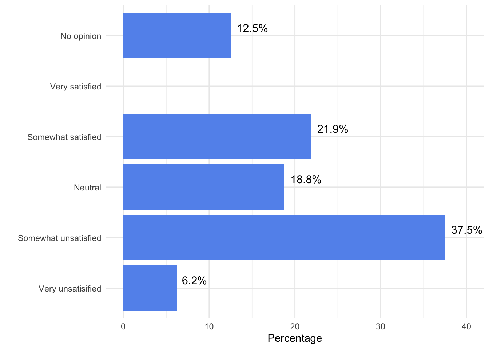
How satisfied are you with the current academic schedule for Graduate Studies at Fresno Pacific?
How satisfied are you with the current academic schedule for Degree Completion at Fresno Pacific?
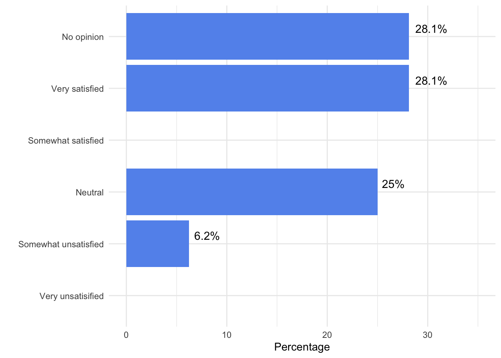
Based on the previous question, why are you satisfied/dissatisfied with the current schedule? Please provide examples alongside your reasoning if you have them.
| Comments |
|---|
| I like that my classes are MWF with TTH off. I have another job so this works with my schedule. I'm afraid my classes will be 4 days a week with the new schedule which will force me to quit my 2nd job. If all of my classes can be 2 days a week, I'd be happy. |
| Although I haven't felt like the TUG schedule posed as serious a problem as others seem to do, I do acknowledge that it would be nice to waste less time leaving spaces for a small number of 4-unit classes and that labs should have to conform to the regular schedule. I have also struggled, when advising, to get commuters to be willing to come in more than twice a week. |
| My courses are scheduled in the afternoon on either T/Th or M/W (similar to the proposed first option for re-designing the master schedule). This works well for me. NOTE: your sliding scale for the questions following this one erroneously range from "1, strongly disagree" to "5, strongly disagree". It looks like this form will need to be reformatted and sent anew? In any case, I'm answering based on the assumption that 1 = strongly disagree, 3 = neutral, 5 = strongly AGREE, etc: |
| We are fortunate to have most of our TUG major courses on Tuesday/Thursday since our students all work & it is not feasible to be in class, on campus every day. I'm worried about that changing for our students. DC courses are way too late...6pm to 10pm is not optimal for learning or teaching for that matter. |
| Degree completion 6 week course duration too short to accommodate learning scientific material well. Undergrad course schedule as currently arranged leads to inefficiencies and course conflicts. |
| I am satisfied with the schedule for seminary students, as it has been designed to work with our population, and has some flexibility to work with faculty needs. We have also been adapting to TUG needs by making classrooms available. |
| I teach mainly in DC so I am not aware of difficulties in the other populations. |
| It does not fit the needs of students, especially student athletes. The preponderance of courses offered during peak times make it hard for them to get the classes they need. We are not efficient in classroom usage. |
| I already have a M-Th schedule, so my experience isn't representative. MWF classes are too short for technical subjects that involve extensive problem solving so we have always scheduled the long-blocks M-Th in my discipline. |
| Early mornings and lots of nights are a really hard reality on students. Athletes are really stuck with a poor experience all-around when they have to decide between meals or class and practice, stuff like that. Or commuters having to take a 7:45am class and a 6pm evening class on the same day. |
| We need more collaborative classrooms. I have sections with 22 students for four hour classes shoved in these tiny, dark, airless spaces. There should be special consideration for night classes and LONG (four hour classes) to have bright, well-lit space with plenty of room to move around. WEC 223 used to be my home with large round tables and big cabinets for storing materials. Now I use a wagon and go from small, cramped place to place. Dreary. Depressing. |
| many athletes leave on Friday's for matches and miss all classes. This can be 1/3 of my classes. |
| The current schedule creates quite a few absences for TUG student athletes. Additionally, scheduling DC has been a challenge as programs are constrained to a limited scheduling window. |
| This semester (Fall 2024), in particular, I have had several students who have had to convert to DS to keep their math classes because of conflicting labs or other classes. In addition, many students have shared their uncertainty in future course offerings, so they take classes out of order just to make sure they get it in here, or they have to find alternative means to satisfy degree requirements. |
| From hearing TUG faculty, it seems that there are significant issues that impact them. TUG seems to benefit from 75 minute class periods twice a week and having as many blocks as possible during day time hours. Graduate and DC courses operate in longer block times and benefit from clear start times on the hour. Our Grad students often work during the day so having a block from 2-5 and 6-9 seems to work best for them. If the TUG schedule is adopted with time changes and a different configuration, it is not very helpful to Graduate students. |
| Overall, I am satisfied. My only area of concern are the classes that are at 8am MWF & 7:45am T/TH. I often wonder if we should refrain from having courses at this time. These time slots are the time slots that I experience the most absences. Further, class engagement is sometimes low. Students are often just too tired to give a full effort. I am concerned about student health and well-being, so I try to encourage them to get a full 8 hours of rest. With their adult responsibilities and busy schedules it can be tough getting a full nights rest when they have that early class. It's just something I have been thinking about. I think it is especially relevant for the 7:45am time slot. |
| TUG schedules are difficult for student athletes. GRAD schedules are designed with working professionals in mind. Schedules adhere to times/days of week that allow the majority of students to attend. |
| The schedule has good points and bad. The 7:45 start time is not ideal for students or faculty, in my opinion. Also, four-unit classes in a two-day per week schedule is not ideal for many students (too much seat time at one sitting). |
| TUG - course conflicts, last minute cancellations and additions |
| The times are a bit awkward. Certain times are very impacted while others have few classes scheduled. |
| I have not had any major issues with the TUG schedule I do not teach Graduate students I think the DC schedule is ok. |
| I am not so much dissatisfied with the schedule, but instead our lack of a computer system for smart scheduling (something that can have constraints entered into it such as faculty name, room number, classes likely to be desired by the same student). Then as we move, for example, Math205 to a new time slot, the system will warn us "not possible, because Jeremy is teaching Math210 at the same time" or "bad idea, because this time slot overlaps with a recommended co-req Chem103". |
| TUG schedule would be more accommodating to students and faculty with a 2 day class option (Mon/Wed - Tues/Thurs) allowing Fridays to be a time for course work or development. |
| From a pedagogical perspective, schedules are the things I work around. They feel more like the topography I have to build a class to accommodate for than one of the variables. So, from that perspective, I never really think about it. For scheduling classes, adjuncts, and other advising/admin things, they are more of a hassle. |
| It is very difficult with limited course offerings and convoluted schedules to help students who must also navigate multiple other commitments that enable them to actually attend university. |
| The flexibility in scheduling. |
| Students often struggle with their TUG schedule, which directly impacts their attendance and participation in the course. |
| The Cohort Model along with the preplanned sequencing makes planning simple in DC |
Do you think that the current TUG schedule meets students’ expectations and needs?
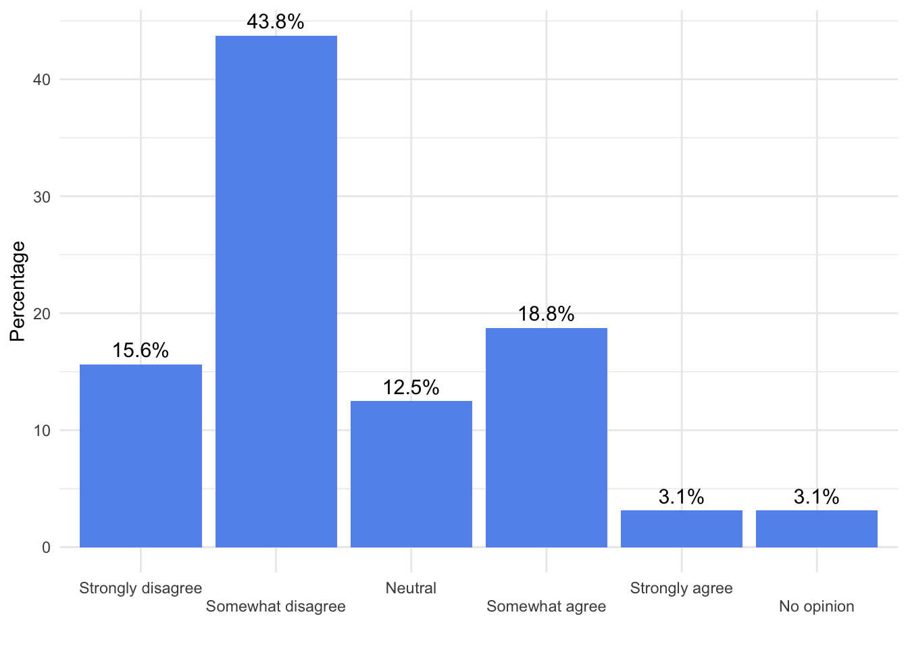
Do you think that the current Graduate studies schedule meets students’ expectations and needs?
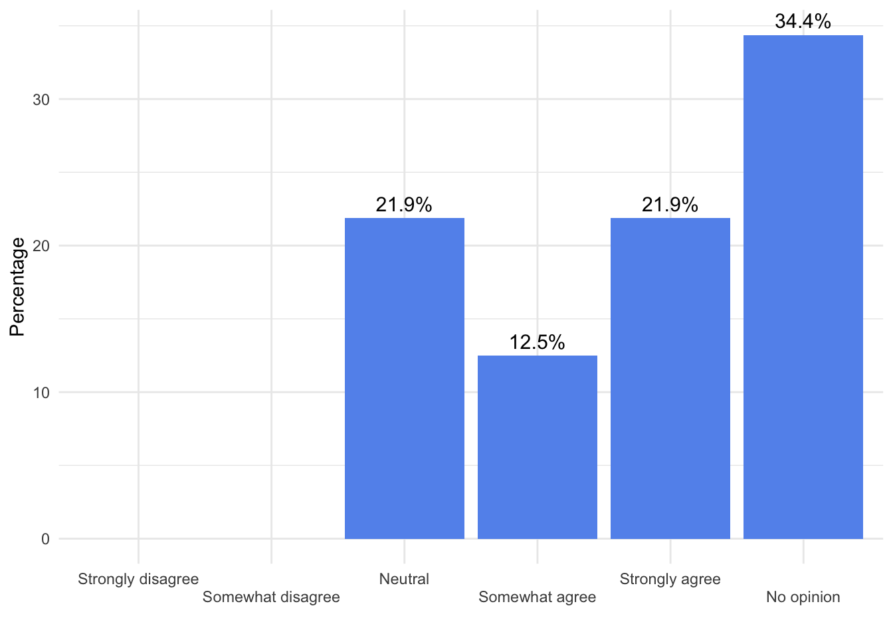
Do you think that the current Degree Completion schedule meets students’ expectations and needs?
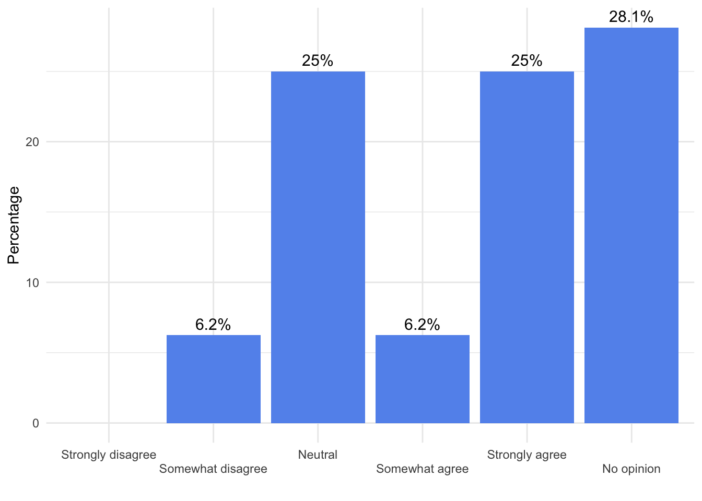
For TUG students, is the current course schedule consistent for meeting the needs of students from semester to semester?
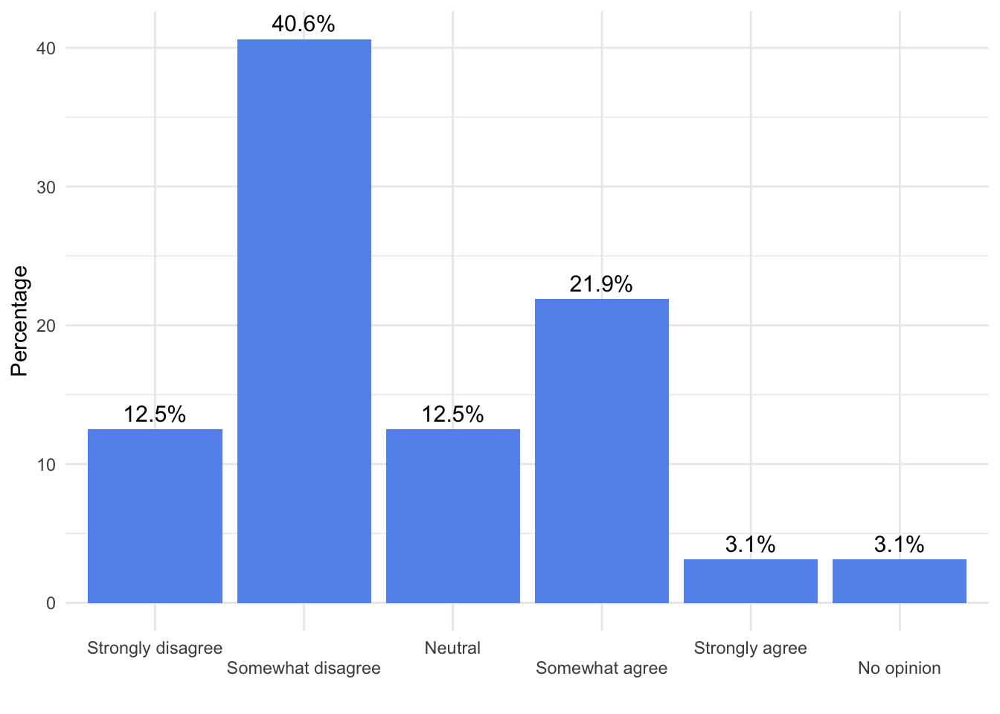
For Graduate students, is the current course schedule consistent for meeting the needs of students from semester to semester?
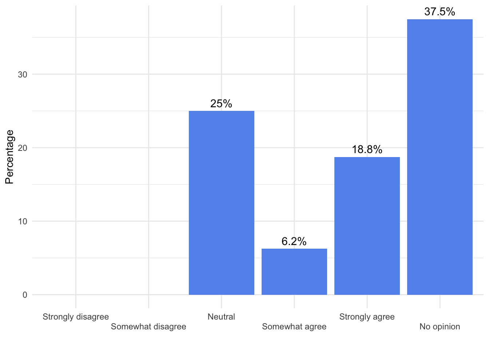
For Degree Completion students, is the current course schedule consistent for meeting the needs of students from semester to semester?
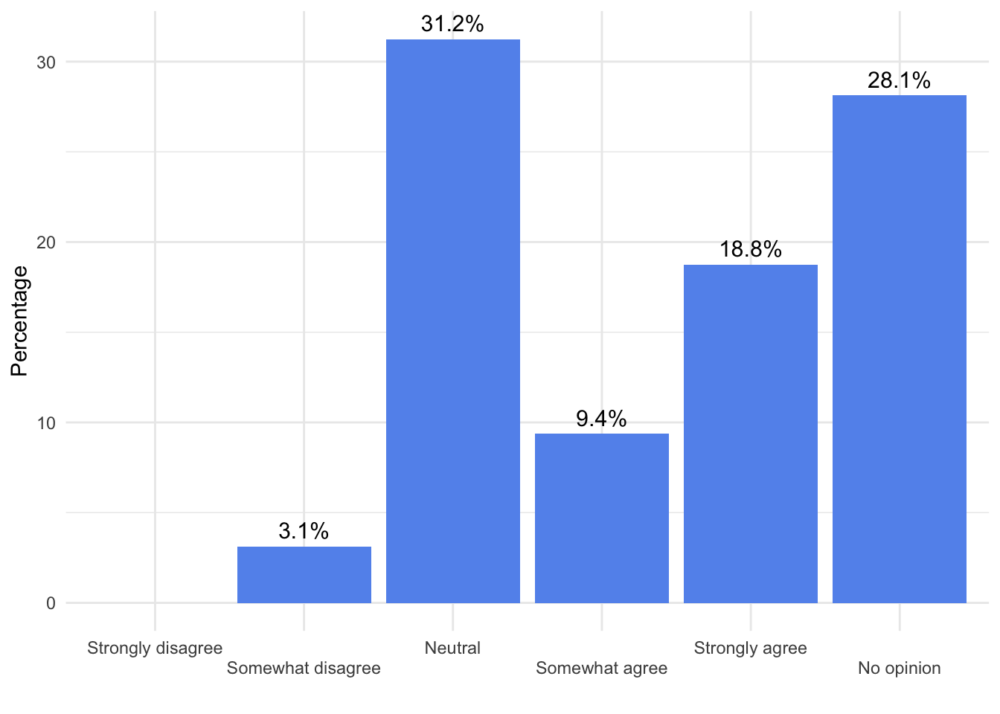
For TUG faculty, how open are you to the implementation of a more flexible course schedule (e.g., hybrid courses, online courses, long-form courses offered once per week, etc.)?
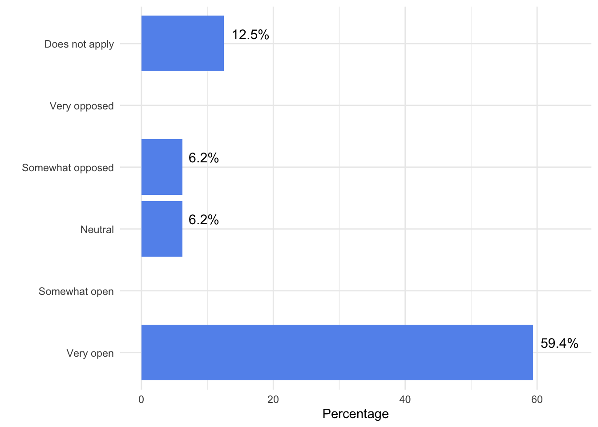
Based on the previous question, why are you open/not open to implementing these kinds of courses? Or, if you are open, what are your concerns?
| Comments |
|---|
| Students need online options, long form courses would be good for some. |
| I am not at all open to hybrid courses or increasing online offerings for this reason. I do think that 4-unit classes should have the 4th unit be online, but I do not think 3-unit classes should meet only once a week or anything like that. I would be extremely opposed to that. But I am very open to a MW/TR schedule. |
| I think changing the schedule could potentially help us, but the bigger issue currently in place at FPU is: there is no coordinated scheduling occurring across the university. If we change the schedule without doing anything else, we will likely face the same issues we currently face: students staying extra semesters because too many of their required courses conflict with each other every semester. |
| I find that our demographic of TUG students need much "hand-holding." That happens best in person, face to face. Further, the challenge of AI means that the more is done apart from F2F and on a digital device is likely to dilute the learning that is supposed to take place. |
| I'm open because we need to be creative & flexible for our student population. Students have many responsibilities outside of class/school. |
| Shortened time frame for science courses does not allow enough time for sequencing and building comprehension. |
| Because that seems to serve the needsof the students. |
| Having flexibility maximizes the degree to which we can serve students in terms of their schedules. |
| I want our students to be successful and for the university to be fiscally strong. We need to be better about curriculum mapping, especially for GE courses. |
| I have taught all of those modalities listed and found that they can be successful. |
| These courses are preferred and beneficial to the realities of our TUG pop-- lots of commuters in charge of younger family members, work a lot of hours, lots of athletes that travel a lot, etc. |
| We need to change the schedule to adapt to a very different study body composition. |
| I am open because I have expereince using these adaptable teaching formats with DC. However, hybrid classes are often difficult for student engagement and make discussions in class difficult as only one person can speak at a time. It is not the best format for teaching all students. |
| I travel over an hour one way to campus, so I would prefer to keep to a MWF schedule, since it provides most time in class per week and minimizes my commute. |
| I think this approach is actually ideal for the modern student. Now more than ever, students want to gain real-world practical experience and to build skills that are applicable to their future professions. It could be argued that classes structured this way could be more beneficial to students compared to traditional lecture courses or teacher-centered education. These course options could help us move to a student-centered learning environment. |
| I am interested in the flipped classroom concept as a means of engaging more active learning in the classroom. Having some online asynchronous content for students to prepare for in-class activity seems, in theory, to be a better teaching strategy. This would belong to the hybrid course format. The key to this being successful is getting students to engage with the online content. Also, course prep to design and develop the online content will take time to do. Having FPU invest in professional "teaching" development on how to do this well would be appreciated. |
| flexibility serves the students better |
| These can be helpful for commuting students |
| I think TUG students want more flexibility, especially fully online or hybrid courses. |
| It is important to meet the needs of the students and align with the growing trends of online options. |
| Any change is hard and requires additional labor (will that be compensated?). That said, different modalities bring up some good opportunities to implement different approaches to the classroom, and that can be a good thing. Faculty must be the ones who determine which of their own classes could be hybrid/online and which could not in any given semester. |
| I have a number of concerns about anything online, especially in the field of communication. I think it is a disservice to build further abstraction into our dealings with other humans given our Christian commitment and the FPU Idea. |
| I am very open to a flexible schedule because it will allow more opportunity for students to maintain their assignments/studying, work schedules, personal lives, and practice/game schedules. This is frequently mentioned in my classes as their main concern and struggle throughout the terms. |
For TUG faculty, would you be open to teaching earlier in the day if it meant finishing earlier in the day? Starting at 7:45AM to finish by 3:00PM, for example.
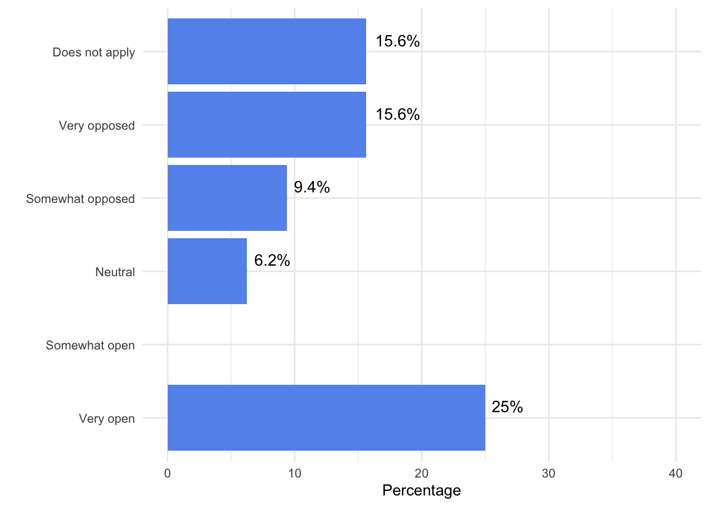
Based on your answer from the previous question, please explain why you selected the option that you did.
| Comments |
|---|
| I would be open if it were 2 days a week, but not 4 days a week. Some of us have another job to supplement our income. |
| I have health issues that make it hard for me to teach first thing in the morning. |
| In my experience, 7:45 start time guarantees tardy students; even strong "A"-level students have a harder time getting to class before 8am. If we are going to change the schedule, I would start no earlier than 8am to ensure student success. |
| Currently, starting early is hard as I have young kids that at times I need to get to school. Otherwise, I would have no objection. I actually think it is healthy for students to learn to have to start early, even if undoubtedly they will be less sharp than later in the day. That is on the assumption that they have the option over their evening, and not forced to do practices after 10PM. |
| Earlier is better than later in the day. Students will be able to have more time to work outside of school when we make room to do that in our course schedules. |
| If it helps students then I can accommodate earlier times but 7:45 5x per week would incur some difficulties for other life requirements. |
| I teach a few courses in TUG and I would not mind. |
| My lectures are more designed to be taught in a block format, so that is preferable to me. In addition, students prefer coming to class two times rather than three. |
| Well, I already DO teach 7:45 classes on a regular basis, and I am NEVER finished by 3, so for me, this would be a dream come true. And if it would lead to better offerings for our students, it would be a win-win. |
| I don't mind for myself - my subjects are more computational, and my experience has been that the students don't function well at that hour. I compared scores for my 7:45 vs later class over several years and found on average, the later class performed better. For a lot of classes, 7:45 would be fine. The other issue is if there are any evening classes. It's rough to teach a night class and then do a 7:45 am either night before or day of. I have had that schedule in the past and try to avoid it. |
| Even if we finish earlier in the day, students' realities don't change and THEY are still needing us around in the later afternoon. |
| I'm somewhat open because I think we should begin no earlier that 8:00 a.m. |
| Current student athletes have practices early that may interfere with starting classes earlier. It is also more difficult to get students to engage in early morning lectures versus later in the morning/afternoon |
| I already each at this time, and while it means early days, getting stuff done early is a blessing. |
| I commute and I teach classes on the first time slot of everyday. So that means I wake up at 5am-5:30 am every day to get here on time. I am also much more of a night person, so I do not mind the later classes. As I mentioned previously, students seem to be less engaged, more tired, and are often absent from the early classes on average. |
| I believe a start time before 8:00 a.m. is not a good idea. Students need rest and nutrition. Earlier starts are not ideal for many students. From a psychological perspective, I do think the extra 15 minutes matters (I do not have proof of this). |
| This schedule serves the students better, and afternoons would be freer for meetings, prep, grading |
| I would not be able to get my kids to school in the morning. |
| I think 8:00am is a better start time. Both for student's retention of information (studies have shown this, that better sleep time/ not starting too early, allows our brains to function better during the day), and also from a practical point of people getting to class on time (both students and faculty who are also managing families etc). |
| I have heard that student success rates at 7:45 am are low. |
| 7:45 is an ungodly hour of the morning. For those who need to bring children to school or commute, this adds a much higher burden. |
| Yes, I would be open to this option. I often teach classes in the afternoon and students struggle with their energy levels |
There are currently 3 options for modifying the Course Schedule. Option 1 is based on a primarily Monday through Thursday schedule and Option 2 (a and b) is based on a Monday through Friday Schedule. Please read through the details of the schedule here and select which one you like best.
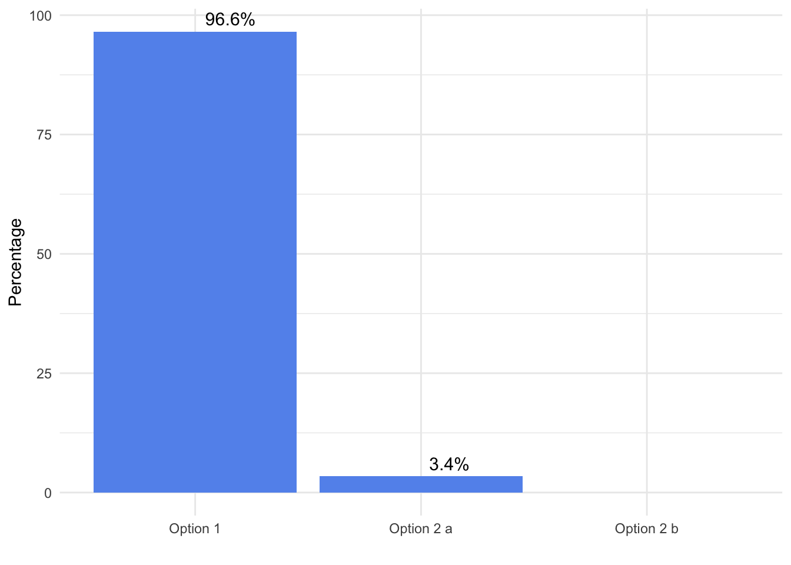
A substantial change to the current academic schedule would significantly affect my work (e.g. ability to balance teaching, research and writing, and personal commitments).
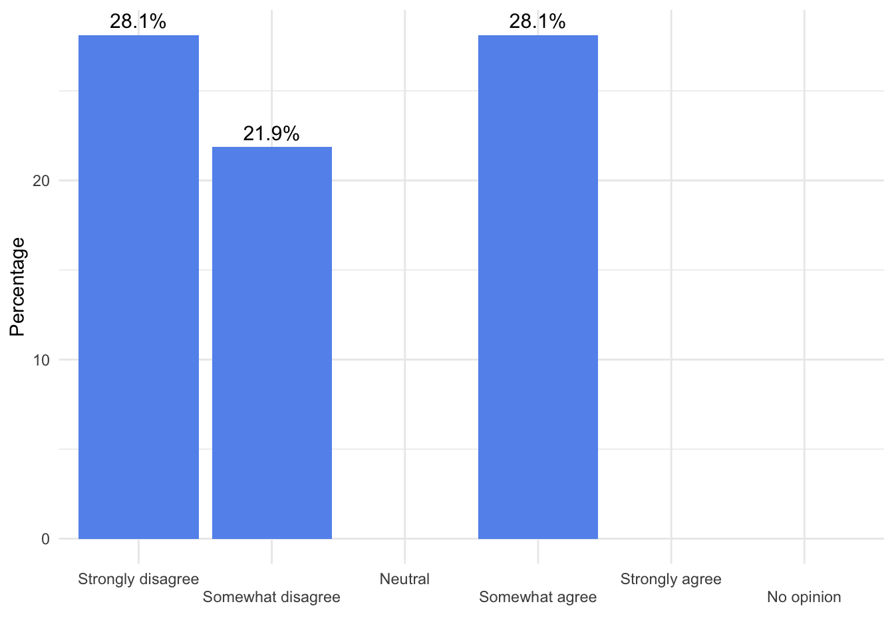
Based on your answer from the previous question, please explain why you selected the option that you did.
| Comments |
|---|
| I think we can make it work. My concern is having to come in 4 days a week rather than the 3 I do now. I have another job. If I can get all 4 of my classes scheduled for 2 days a week, I'd be happy. |
| I'm more worried about the initial work of taking a MWF class and reframing it as a MW class. Some of my classes are heavily based on the idea of meeting three times a week. But after that work is done, I don't think it would bother me. |
| I can't know without trying out a new schedule, but my hunch is that no substantial difference would take place. |
| It's hard to know. |
| This creates more uniformity for our students, thus my schedule as well as a faculty member. Also, I just want to draw attention to the previous scale that only had disagree options... the likert responses was incorrect therefore I just put neutral. |
| The altered schedule would have benefits as well as drawbacks, so it has a net neutral impact on me. |
| I support TUG changing schedules. But I am worried about whether the TUG is being made with consideration of other needs, particularly Grad and SEM. |
| I have as much as possible to try to structure my day to fit option one already. |
| It would require some substantial changes to course formatting and to my own personal schedule, but I am very willing to make those sacrifices if it would be for the greater good. |
| I already have a M-Th schedule and love it. Students miss less due to sports activities and have Fridays for work or internships. I have a solid day at the end of each week to grade and prepare for the following week. My class blocks are long enough to dive deep into the material and practice computations. |
| It would be more organized and balanced and serve students in the same ways. |
| It will impact the courses I now teach M/W/F but I am willing to change these to adapt to the new schedule Option 1 |
| This may improve my current work schedule if Friday schedule is more flexible and time is freer for committees and other necessary meetings. |
| Course load and scheduling would be about the same for me now, and I like the options, I'm really good with any of them. |
| It is unclear whether there will be flexibility for Grad scheduling or if all programs will have to fit within the TUG needs. If the option selected by TUG means that Grad has to teach in 75 minute blocks or our students have to be here earlier in the day or we are teaching later in to the night, then it would definitely impact me and our students. |
| - |
| Current GRAD courses in my programs are based on a 2:00-5:00pm and 6:00-9:00pm teaching blocks. The proposed changes on Option 1 would either: 1. Have our students start earlier in the day (1:25pm) necessitating more time taken off work and having increased "down time" between class blocks (4:25-6:00pm), OR 2. Require students to attend class from 2:40-9:00pm with only a 10-minute break between class blocks, or stay until 10:00pm in the evening if the second class block was moved back to start at 7:00pm to give them a dinner break. Both consequences of the time changes would result in work-home (childcare) balance problems. |
| I think option one might actually affect my work in a positive way. Overall, the end result might be more time for scholarship. At the very least, I do not think this will have a negative influence on my overall work. |
| the adjustments would be minor for me, and both I and the students would have a more balanced schedule (and thus more balanced life, hopefully) |
| I already teach mostly two-day or one-day classes |
| I don't think it would affect my work negatively. I would prefer to teach only two days. |
| Hard for me to predict what the change will do to my work experience. |
| This change would provide a day to focus on course development and grading. |
| At first, the challenge will be adapting classes to a new schedule; after that, I believe the M-Th schedule would actually allow a good deal more space for research and scholarship. In the long term, this would be a positive effect on on my work. |
| I believe option 1 would allow for more time for preparation for teaching, research, and writing while being able to balance personal commitments. |
| I feel it would work best for students and faculty |
Please rank your concern (0 = not concerned, 10 = very concerned) regarding potential changes to the academic schedule in the different categories below.
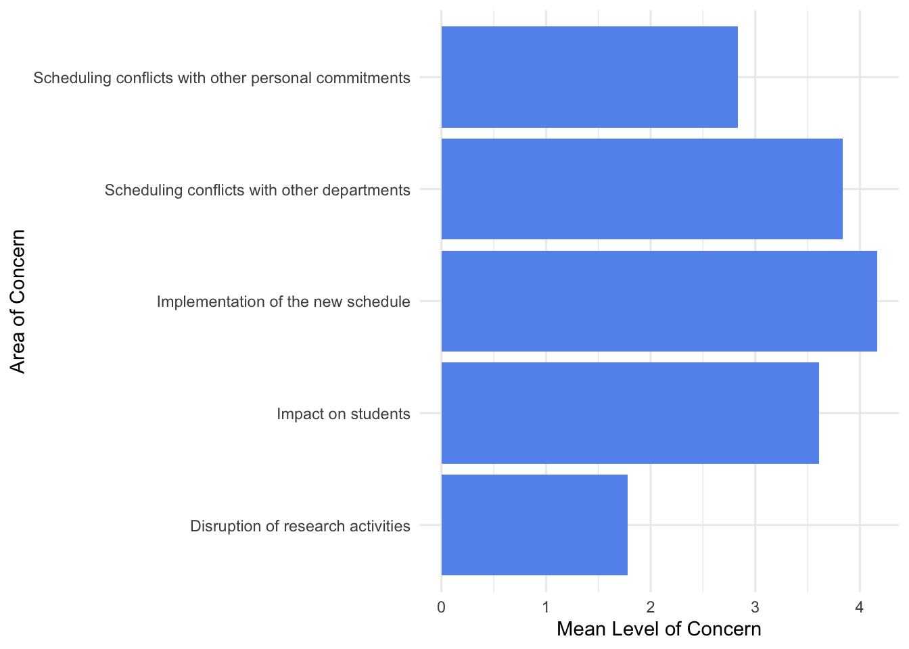